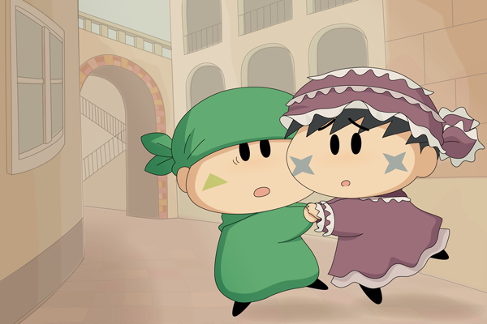

サスケ「お、オイラはサスケじゃなくてサス子ちゃんだぜ？」
ハンゾー「女装が効いてないのら～。バレバレなのら～」
「・・・くんくん・・・虫歯の匂いがする・・・」
３８話「オイラたちにおまかせ！」で登場した”ひらひらなサスケ”を急に描きたくなり、勢いで描いてみました。ひらひらなサスケとは『ひらひらステッキ』で服装をひらひらにさせられたサスケです。皆さん覚えていますか～？ 女の子っぽい恰好に恥ずかしさを感じていたサスケが妙にかわいくて私の脳裏にくっきり焼き付いていたりします。
勢いで描いてみたことで、謎な表情や背景となってしまいました。そんな絵に、くろねこさんが見事な設定↓を付けてくれました。
―――虫歯の治療のために追ってきたデンタ先生とか…？見つからないように女装してみたものの、結局バレて追いつめられてしまったというシチュなんてどうでしょうか…(笑)
・・・ありがたく使わせていただきました！(^^) デンタ先生は虫歯の匂いに反応するので、見た目が変わっても虫歯の匂いがする限りはどこまでも追ってくるのでしょうね。
(2014/5/27)